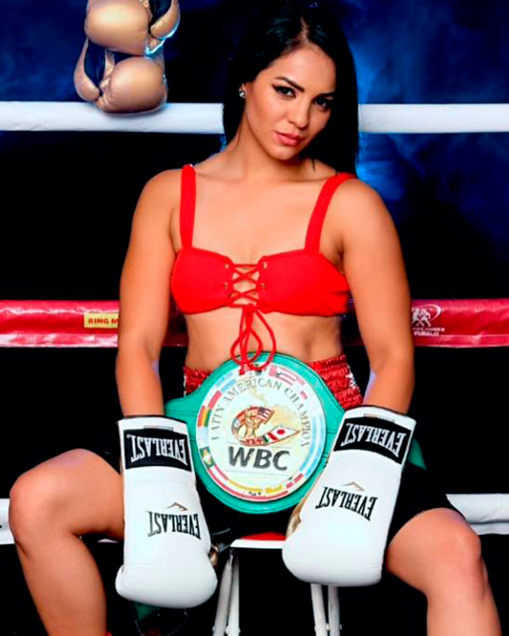

← Nuestros peleadores
Diana Fernández · La Bonita

Ciudad Juárez, Chihuahua · 38-4-1, 5 KO’s
Influenciada por su hermano mayores, la juarense Diana ‘La Bonita’ Fernández inició en el boxeo como complemento a su actividad en el modelaje, para mantenerse en forma; descubriendo que le seducía la adrenalina de los combates; y con un inicio alentador de tres nocauts en sus primeros enfrentamientos sumó victorias que le valieron para viajar a Argentina y disputar el título mundial; continuó con su desarrollo enfrentando a las mejores, grandes nombres figuran en su hoja de servicios con triunfos que la catapultaron hasta el número uno de las clasificaciones mundialistas, con la oportunidad de disputar el campeonato mundial Silver WBC que se adjudicó al derrotar a la estadounidense Nayeli Rodríguez: logró conquistar el cinto mundial interino WBC de la categoría supermosca